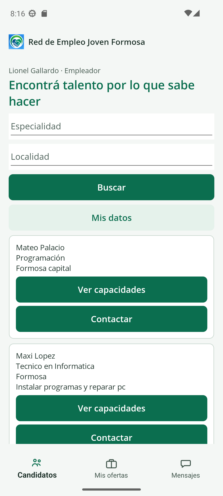
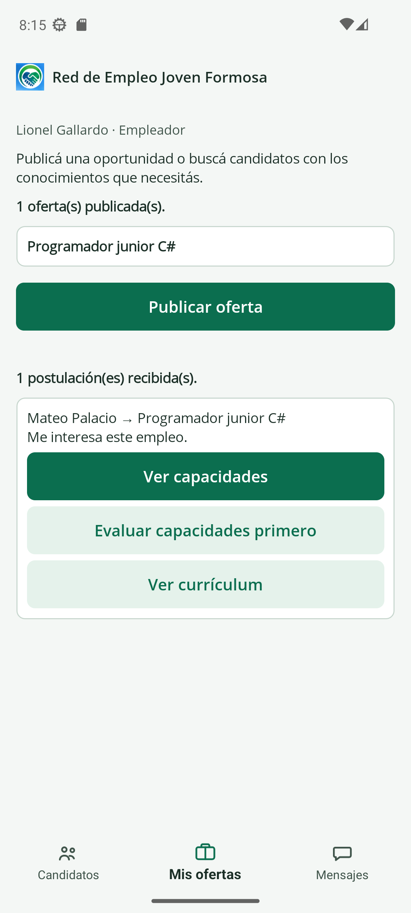
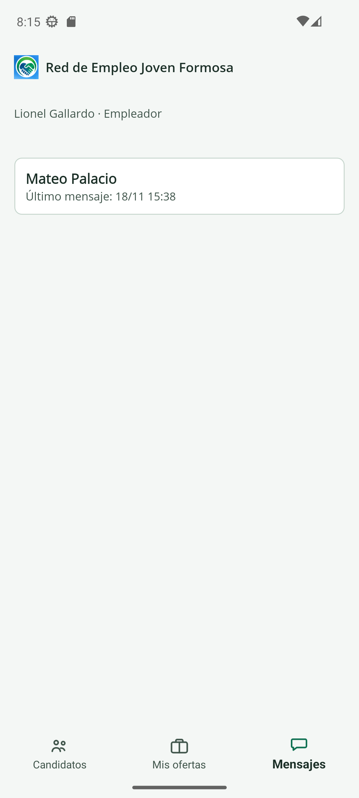

Muchos jóvenes terminan sus estudios técnicos y les cuesta mostrar lo que saben cuando buscan su primer empleo.
Las empresas necesitan conocer qué sabe hacer una persona antes de contratarla.
Las instituciones educativas pueden respaldar los proyectos hechos durante la formación. Muchas veces ese trabajo queda solo en el aula.
Nuestra solución
Red de Empleo Joven Formosa conecta esos tres intereses. Ya permite:
Presentar un CV con ayuda de Gemini.
Mostrar proyectos y capacidades.
Pedir a la institución que revise un trabajo académico.
Consultar ofertas y postularse.
Escribirse entre egresado y empleador.
La plataforma no garantiza una contratación.
Cómo funciona
Hay cuatro tipos de cuenta. Elegí una para ver su problema, su beneficio y los botones que existen de verdad.
1
App Android
Mostrá lo que sabés hacer, aunque todavía no tengas experiencia laboral.
Problema. Terminaste tus estudios, pero el CV no alcanza para demostrar tus capacidades.
Qué podés hacer. En la pestaña Empleos están «Preparar mi perfil», «Buscar empleos», «Mis postulaciones» y «Ver empleo». En Mi perfil están «Crear mi CV con IA», «Mejorar mi CV con IA», «Ver PDF», «Descargar», «Agregar trabajo o proyecto», «Editar mis conocimientos» y «Ver y editar» los estudios. Mensajes abre las conversaciones.
Gemini ayuda a redactar. No certifica los estudios ni decide una contratación. La institución es quien puede revisar un proyecto.
2
App Android
Encontrá talento técnico local con capacidades visibles.
Problema. Hace falta contratar, y un currículum no siempre muestra los conocimientos prácticos.
Recorrido real. Lionel Gallardo, empleador, publicó «Programador junior C#». Mateo Palacio se postuló. Los dos ya tienen una conversación. No se muestran correos ni teléfonos.

Candidatos. «Buscar» filtra. «Ver capacidades» abre lo compartido. «Contactar» abre la conversación.

Mis ofertas. «Publicar oferta» crea un aviso. En la postulación se puede ver capacidades o el currículum.

Mensajes. La conversación con Mateo queda guardada.
3
Sitio web
Dale visibilidad al trabajo realizado por tus egresados.
Problema. Un proyecto académico puede quedar en el aula y no llegar a las empresas.
Qué hace la institución. Entra a «Mi institución», mira «Trabajos por revisar», abre la evidencia y registra el resultado. Lo revisado queda en «Trabajos revisados».
Instituto Superior Fermosa ya revisó el proyecto «Sistema de Gestión de Stock para Comercios», de Mateo Palacio. El resultado visible es «Avalado». Los nombres de docentes que aparecen en un catálogo de prueba no son revisores reales: no firman avales.
4
Sitio web
Una plataforma organizada, con usuarios y permisos definidos.
El administrador gestiona cuentas, administra instituciones, controla qué institución puede validar trabajos y consulta los reportes que existan.
Cada actor entra a lo suyo. Un empleador no administra instituciones. Una institución no ve el panel de administración. Esta presentación no muestra listas con correos ni claves.
No hay estadísticas inventadas. Si un reporte no tiene datos, la pantalla lo dice.
El recorrido, en cinco pasos
1
El egresado crea su perfil y presenta sus capacidades.
2
La institución puede revisar sus proyectos.
3
El empleador publica una oportunidad.
4
El egresado se postula.
5
Los dos pueden escribirse.
Conocé Red de Empleo Joven Formosa
Cómo está armada, en palabras simples
App Android y web→API→Base de datosGemini, solo para ayudar con el CV
C# y .NET MAUI permiten construir la aplicación Android.
ASP.NET Core conecta las partes del sistema.
Razor Pages construye las pantallas web.
SQL Server guarda la información.
Gemini ayuda a redactar y mejorar el currículum.
GitHub guarda el código. GitHub Pages publica solo esta presentación: no ejecuta la API ni la base de datos.
Qué gana cada persona
1. ¿Qué es?
Una plataforma para conectar capacidades técnicas con oportunidades locales.
El egresado puede mostrar más que su currículum.
2. ¿Por qué existe?
El primer empleo suele pedir experiencia que el joven todavía no tiene.
Sirve para presentar trabajos, estudios y capacidades concretas.
3. ¿Para qué sirve?
Para que cada actor haga su parte.
El egresado gana visibilidad. La empresa encuentra candidatos. La institución respalda proyectos. El administrador mantiene el orden. El resultado buscado es una mejor conexión entre educación técnica y empleo, no un puesto asegurado.
4. ¿Cómo funciona?
Perfil, revisión, oferta, postulación y mensaje.
Esos son los cinco pasos. No hay un paso oculto ni un ranking.
No buscamos ser otro portal de currículums
LinkedIn
Ya ofrece perfiles profesionales y búsqueda de empleo en una red amplia. No está armado para que una institución de Formosa revise un trabajo de cátedra dentro del mismo recorrido local.
Computrabajo
Ya publica avisos y recibe postulaciones. El centro es el aviso y el CV. Acá también importa el proyecto académico y si la institución lo revisó.
Oficios Formosa
Ya acerca ofertas de la provincia. Red de Empleo Joven Formosa suma, en la misma cuenta, la formación técnica, el proyecto y la revisión institucional.
La diferencia no es decir que las otras plataformas no tienen herramientas. La diferencia es reunir formación técnica, proyectos académicos, revisión institucional y búsqueda de empleo local en un mismo recorrido.